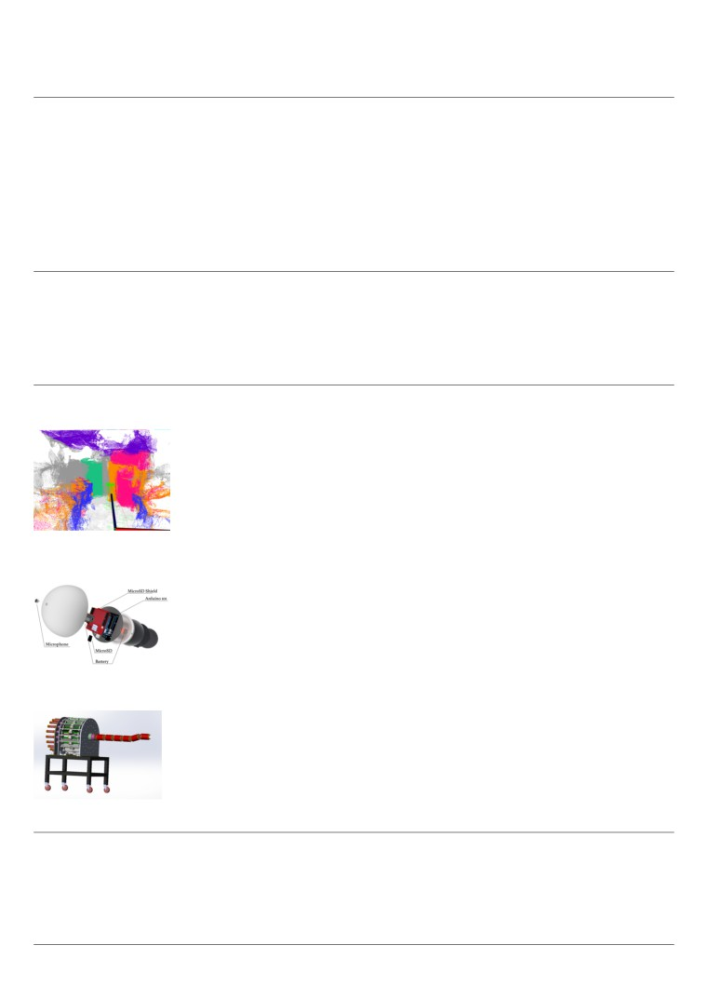

Ziyun Ge
· Address: FIT Building, Tsinghua University, Beijing · E-mail: ziyunge1999@gmail.com
Education
Zhejiang University, Bachelor
2015.9-2019.6
Bachelor of Engineering in Ocean Engineering and Technology
GPA: 3.59/4.00(overall) 3.89/4.00(major)
University of Rhode Island, International Exchange Student
2018.8-2018.12
Major in Computer Science, sponsored by China Scholarship Council (CSC)
GPA: 4.00/4.00
Related Courseworks: Data structure(4.0), Intro to HTML Javascript and CSS(4.0), Principle of Automatic Control(91),
Embedded System(90), Electronic Engineering Training(92), Basics of Electronics and Circuits(88), Signals and System-
s(86), Digital Circuit Analysis and Design(83), Interface Technique of Microcomputer(90), Theoretical Mechanics(89), Ma-
terial Mechanics(90)
Publications & Patents
• Ziyun Ge, Shuo Zhang, Junyao Xie, Zhiyuan Tang, Stevan Dubljevic*. Development of a swimming robot for pipeline
leak detection. In American Control Conference (ACC 2020), Denver, Colorado. Accepted. [preprint ]
• Chen Zheng, Ge Ziyun, Li Jianpeng, Song Wei, Wang Tao. Inverse kinematics solution method for spatial function
track movement of multi-joint mechanical arm | Inverse kinematic solving method of manual operation and control of
multi-joint mechanical arm. China Patent. Publicly Announced.
Research & Work Experience
Research Assistant | Tsinghua University, Beijing, China
Jul 2019 - present
Establishment of offline dense semantic point cloud map | Supervisor: Prof. Zhidong Deng
• Extracted depth information from binocular vision using MeshStereo (a stereo matching algo-
rithm published in ICCV 2015)
• Inputted binocular RGB images and depth images together into the ORB-SLAM2 system. The
average absolute trajectory error tested ten times on the same local data set was 0.185m
• Utilized DeepLabv3+ for semantic segmentation. Category average accuracy rate was 94.27%
• Fused the semantic information and the trajectory information calculated by SLAM to generate
the final semantic point cloud map (as shown on the left)
Research Intern | University of Alberta, Edmonton, Canada
Jan 2019 - Apr 2019
Swimbot-Pipeline Leak Detection Robot | Supervisor: Dr. Stevan Dubljevic
• Multi-sensor fusion with Madgwick filter for IMU attitude resolution to reduce the error rate
of the distance calculation to 2.8%
• Applied wavelet transform to extract the energy feature vectors of each frequency band of the
recorded sound data
• Utilized Bayesian Classifier and Neural Network respectively to classify each feature to finally
identify the leak. The test accuracy of leak detection in a total of 400 data segments was 98%
Research Assistant | Zhejiang University, Hangzhou, China
Apr 2017 - Jun 2019
Rope-Driven Multi-Joint Robotic Manipulator | Supervisor: Prof. Zheng Chen
• Adopted the rotation matrix method to implement inverse kinematics calculation algorithm
of the manipulator (MATLAB)
• Designed a PID controller to control the position of magnetic grid to achieve the position error
within 0.02cm (Simulink)
• Make the manipulator carry a pen at the end of the arm and write on the whiteboard and draw
Selected Honors & Awards
Silver Medal in Soft Material Robot & Component Technologies Challenge of ICRA 2018
First Place in Smart Car Challenge of The 20th China Robot Competition (1/10 teams of top Univ. in China)
First Place in The 12th Zhongkong Cup Robot Contest of Zhejiang University (1/60 teams of ZJU)
First Place in The 2th Aotuo Cup Underwater Robot Design Contest of Zhejiang University (1/20+ teams of ZJU)
Third Prize in The 8th National College Student Mathematics Competition(Top 25% in China)
Skills
Programming Languages: C, C++, Python
Technical: Linux, Matlab, ROS, Simulink